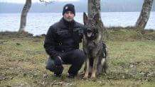
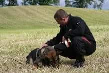

Min bakgrund
Bengt Axelson heter jag och är född-1966 uppvuxen i ett litet samhälle strax utanför Jkpg. Pappa och Mamma hade ett flertal olika Hundar under min uppväxt och kanske var det där Som mitt intresse för just Hunden grundades. Jag hamnade på JBK ( Jönköpings Brukshunds klubb ) av en ren slump nån gång på 1990-talet och blev ganska omgående aktiv medlemm och trogen klubben under många år. Det var under denna tid jag köpte min första Schäfer valp Zacko och tränade/tävlade i lydnad med blandat resultat. Hittils har det blivigt fyra egna Schäfer hundar Men det blir med all säkerhet fler då jag har en förkärlek till just bruks Schäfer hunden.
Mina Utbildningar
Hund Utbildningsgruppen i Alvesta
Kungliga Hundar i Göteborg
Mina Mål
Jag hjälper hundägare att få bättre kontakt och samarbete med sin hund. Här följer några exempel på när man som Hundägare väljer att kontakta mig för vägledning.
- Hunden drar i koppel vid promenader
- Hunden göt utfall mot andra hundar vid promenader
- Hunden kan inte lämnas själv i hemmet
- Hunden skäller oavbrutet vid bil färd
Kontakt
- Bengt Axelson
- Mobile: 0723305666
- Email: bengtaxelson51@gmail.com